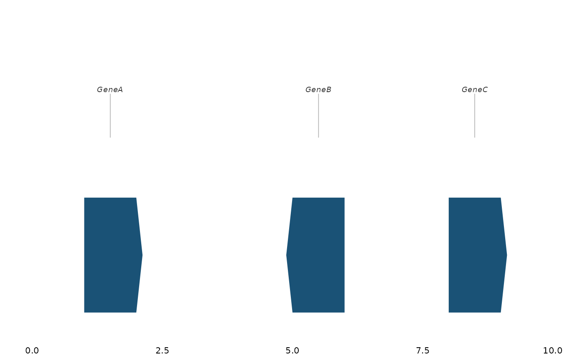
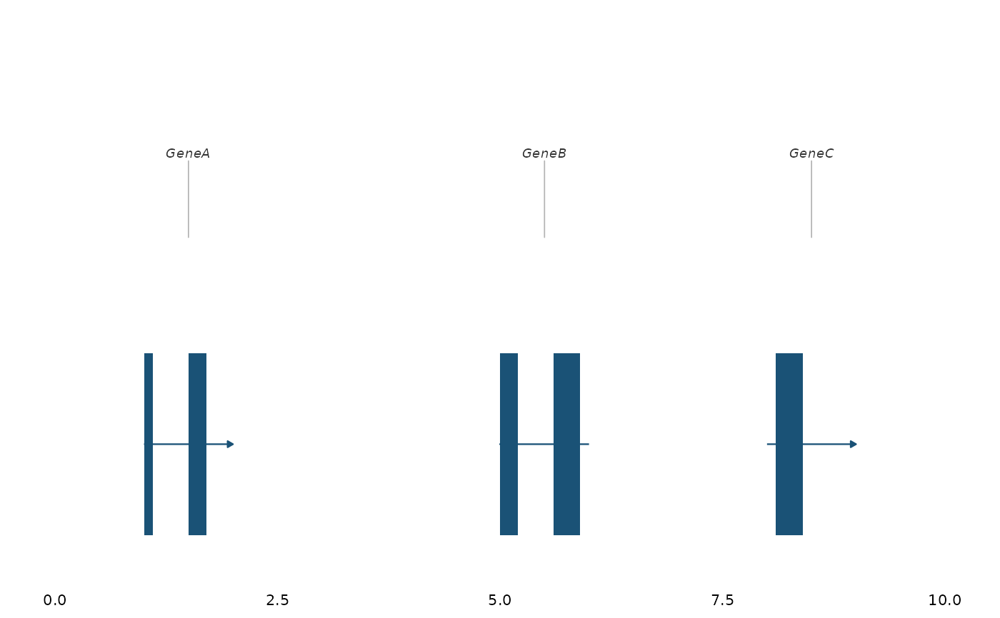

Create a standalone gene annotation panel that can be composed with
any ggwas plot using patchwork. Genes are drawn as directional bodies
with strand arrows and labels; when exons are supplied, each gene is
rendered as an intron backbone with exon boxes and a strand arrow.
Usage
gene_track(
genes,
region,
exons = NULL,
highlight_genes = NULL,
highlight_color = "#E74C3C",
label_size = 2.5,
track_color = "#1A5276",
show_strand = TRUE,
max_genes = 50
)Arguments
- genes
Gene models as a GenomicRanges::GRanges object, or a
TxDb(GenomicFeatures) orEnsDb(ensembldb) annotation object. Labels are taken from the first metadata column namedgene_name,symbol,geneorName, falling back togene_idand then tonames(genes). ATxDbonly carries gene IDs; add agene_namecolumn toGenomicFeatures::genes(txdb)to show symbols (see the vignette). GTF and GFF3 files can be read withrtracklayer::import().- region
The region to draw: a GenomicRanges::GRanges of length 1, or a string such as
"chr6:25000000-34000000".- exons
Optional exon structure: a
GRangesListof exons split by gene ID (as returned byGenomicFeatures::exonsBy(txdb, by = "gene")), aGRangeswith agene_idor gene name column, orTRUEto take exons fromgeneswhen it is aTxDborEnsDb. Exons are matched to genes by gene ID.- highlight_genes
Character vector of gene names to highlight.
- highlight_color
Color for highlighted genes.
- label_size
Text size for gene labels.
- track_color
Default color for gene bodies.
- show_strand
If TRUE, draw arrows indicating gene direction.
- max_genes
Maximum number of genes to display. The longest genes are kept when the limit is exceeded.
Value
A ggplot object. Compose with a Manhattan or locus plot using
patchwork::wrap_plots().
See also
locus_plot(), which adds this track under a regional plot.
Examples
library(GenomicRanges)
#> Loading required package: stats4
#> Loading required package: BiocGenerics
#> Loading required package: generics
#>
#> Attaching package: 'generics'
#> The following objects are masked from 'package:base':
#>
#> as.difftime, as.factor, as.ordered, intersect, is.element, setdiff,
#> setequal, union
#>
#> Attaching package: 'BiocGenerics'
#> The following objects are masked from 'package:stats':
#>
#> IQR, mad, sd, var, xtabs
#> The following objects are masked from 'package:base':
#>
#> Filter, Find, Map, Position, Reduce, anyDuplicated, aperm, append,
#> as.data.frame, basename, cbind, colnames, dirname, do.call,
#> duplicated, eval, evalq, get, grep, grepl, is.unsorted, lapply,
#> mapply, match, mget, order, paste, pmax, pmax.int, pmin, pmin.int,
#> rank, rbind, rownames, sapply, saveRDS, table, tapply, unique,
#> unsplit, which.max, which.min
#> Loading required package: S4Vectors
#>
#> Attaching package: 'S4Vectors'
#> The following object is masked from 'package:utils':
#>
#> findMatches
#> The following objects are masked from 'package:base':
#>
#> I, expand.grid, unname
#> Loading required package: IRanges
#> Loading required package: Seqinfo
genes <- GRanges(
c("chr1:1000000-2000000:+", "chr1:5000000-6000000:-",
"chr1:8000000-9000000:+"),
gene_name = c("GeneA", "GeneB", "GeneC")
)
# Gene-body track
gene_track(genes, region = "chr1:1-10000000")

# With exon structure, one GRanges per gene
exons <- GRangesList(
GeneA = GRanges(c("chr1:1000000-1100000", "chr1:1500000-1700000")),
GeneB = GRanges(c("chr1:5000000-5200000", "chr1:5600000-5900000")),
GeneC = GRanges("chr1:8100000-8400000")
)
names(genes) <- names(exons)
gene_track(genes, "chr1:1-10000000", exons = exons)
